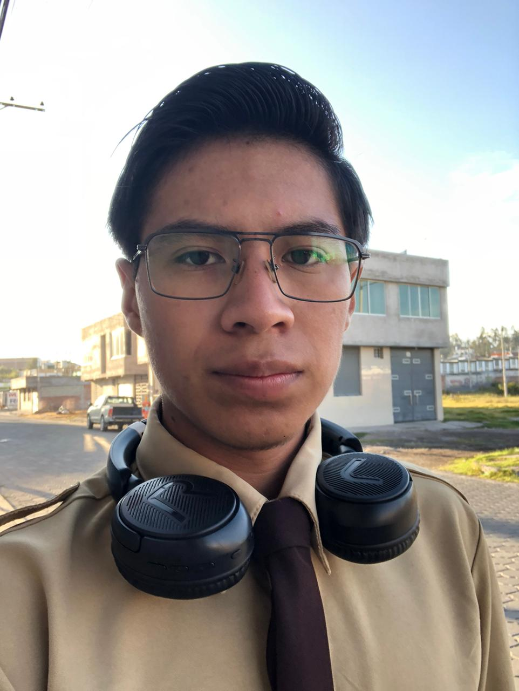

Blog de Anthony
Bienvenidos a mi blog personal
En este espacio compartiré mis pensamientos, experiencias y proyectos relacionados con mis intereses. Aquí encontrarás contenido sobre poesía, fotografía, redes sociales, mis estudios, hobbies y proyectos en los que estoy trabajando. ¡Espero que disfruten explorando mi mundo!
¿Quién soy?
Mi nombre es Anthony, me gusta la tecnología, ya sea software o hardware, quiero aprender varios idiomas para poder viajar y mejorar mi mente, me gusta el color café y el azul , me gusta la música, la fotografía, me gusta la poesía y escribir mis pensamientos, me gusta la programación y el desarrollo de software, me gusta aprender cosas nuevas, pueden conocermar mas de mi en las secciones de este blog, y tambien pueden contactarme a traves de mis redes sociales, espero que disfruten de mi blog y que puedan aprender algo nuevo o encontrar algo interesante para ustedes.
